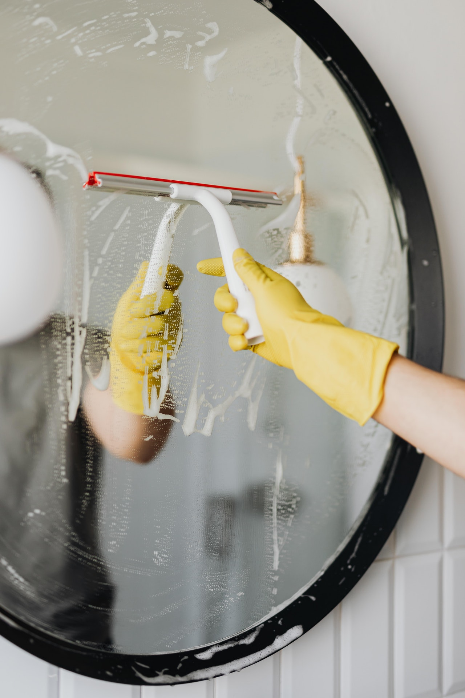
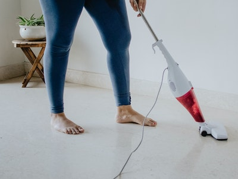

Modern Configurations
A wide variety of technologies, designs, and configurations are available for both domestic and commercial cleaning jobs.
A vacuum cleaner, also known simply as a vacuum or a hoover, is a device that causes suction in order to remove debris from floors, upholstery, draperies, and other surfaces. It is generally electrically driven. The debris is collected by either a dustbag or a cyclone for later disposal. Vacuum cleaners, which are used in homes as well as in industry, exist in a variety of sizes and models—small battery-powered hand-held devices, wheeled canister models for home use, domestic central vacuum cleaners, huge stationary industrial appliances that can handle several hundred litres of dust before being emptied, and self-propelled vacuum trucks for recovery of large spills or removal of contaminated soil. Specialized shop vacuums can be used to suck up both dust and liquids.
 visit en.wikipedia.orgAlthough vacuum cleaner and the short form vacuum are neutral names, in some countries (UK, Ireland, USA) hoover is used instead as a genericized trademark, and as a verb. The name comes from the Hoover Company, one of the first and more influential companies in the development of the device. In New Zealand, particularly the Southland region, it is sometimes called a lux, likewise a genericized trademark and used as a verb.[1][2] The device is also sometimes called a sweeper although the same term also refers to a carpet sweeper, a similar invention.
The vacuum cleaner evolved from the carpet sweeper via manual vacuum cleaners. The first manual models, using bellows, were developed in the 1860s, and the first motorized designs appeared at the turn of the 20th century, with the first decade being the boom decade.
A wide variety of technologies, designs, and configurations are available for both domestic and commercial cleaning jobs.
pright The older of the two designs, direct-fan cleaners have a large impeller (fan) mounted close to the suction opening, through which the dirt passes directly, before being blown into a bag. The motor is often cooled by a separate cooling fan. Because of their large-bladed fans, and comparatively short airpaths, direct-fan cleaners create a very efficient airflow from a low amount of power, and make effective carpet cleaners. Their "above-floor" cleaning power is less efficient, since the airflow is lost when it passes through a long hose, and the fan has been optimized for airflow volume and not suction. Fan-bypass uprights have their motor mounted after the filter bag. Dust is removed from the airstream by the bag, and usually a filter, before it passes through the fan. The fans are smaller, and are usually a combination of several moving and stationary turbines working in sequence to boost power. The motor is cooled by the airstream passing through it. Fan-bypass vacuums are good for both carpet and above-floor cleaning, since their suction does not significantly diminish over the distance of a hose, as it does in direct-fan cleaners. However, their air-paths are much less efficient, and can require more than twice as much power as direct-fan cleaners to achieve the same results. The most common upright vacuum cleaners use a drive-belt powered by the suction motor to rotate the brush-roll. However, a more common design of dual motor upright is available. In these cleaners, the suction is provided via a large motor, while the brushroll is powered by a separate, smaller motor, which does not create any suction. The brush-roll motor can sometimes be switched off, so hard floors can be cleaned without the brush-roll scattering the dirt. It may also have an automatic cut-off feature which shuts the motor off if the brush-roll becomes jammed, protecting it from damage.
Canister models (in the UK also often called cylinder models) dominate the European market. They have the motor and dust collector (using a bag or bagless) in a separate unit, usually mounted on wheels, which is connected to the vacuum head by a flexible hose. Their main advantage is flexibility, as the user can attach different heads for different tasks, and maneuverability (the head can reach under furniture and makes it very easy to vacuum stairs and vertical surfaces). Many cylinder models have power heads as standard or add-on equipment containing the same sort of mechanical beaters as in upright units, making them as efficient on carpets as upright models. Such beaters are driven by a separate electric motor or a turbine which uses the suction power to spin the brushroll via a drive belt.
Drum or shop vac models are essentially heavy-duty industrial versions of cylinder vacuum cleaners, where the canister consists of a large vertically positioned drum which can be stationary or on wheels. Smaller versions, for use in garages or small workshops, are usually electrically powered. Larger models, which can store over 200 litres (44 imp gal; 53 US gal), are often hooked up to compressed air, utilizing the Venturi effect to produce a partial vaccum. Built-in dust collection systems are also used in many workshops.